72 screens, light and darkRound 10Critic median 8.7 · target 9.2
Each screen shows its resting state. Play motion runs it live; tap a phone to open it full size, where the buttons lead through the flows. Before / after puts the current app next to the redesign.
Five grounds, one meaning eachApricot for your days, ocean for cravings, violet for evenings, mint for the plan, cream or navy for reading.
One primary buttonInk on light grounds, cream on dark. No more green, purple or yellow buttons.
Every finish gets a momentA check draws, the character reacts, the number counts up, a badge stamps in when one is earned.
Badges, not pointsPrep stamps 1 to 7, Day Xero, days free, waves ridden and evenings, shown wherever progress shows.
Icon and launch
A new icon where the zero is Xero, and a 2.4 s paper-cut sunrise to open the app.
000
App icon
Motion The hero icon (Light on the light board, Dark on the dark board) settles onto its board (900 ms), then the sun rises 70 units inside Xero's window over 1.2 s (ease-out, from 700 ms). The variants arrive with a 90 ms stagger, then the home-screen row fades up last. On device: the static icon; the sunrise can play in the launch screen's first 400 ms so icon and launch feel continuous.
000
Launch
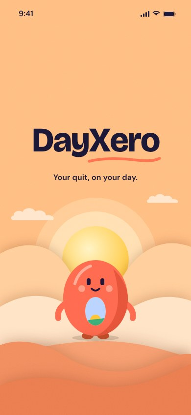
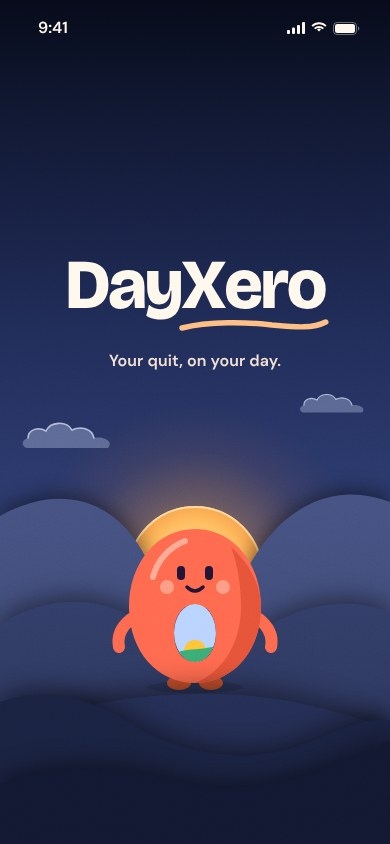
Motion 2.4 s, then hold. Dark mode: a pre-dawn sky (deep blue at the top easing to a lighter dawn blue at the horizon) and the same timeline with a low, warm amber sun that stops 46px lower, half behind the back hill. 0-1000ms back hill rises 220px (settle); 140-1140ms mid hill rises 260px; 280-1280ms front hill rises 300px, then the two near layers follow at 360ms and 440ms (each paper layer casts a soft shadow up onto the one behind; no crest lines). 250-1750ms the sun climbs 240px into the valley (ease-out), its two paper rings open from 0.6 to 1 at 800-1900ms (dark mode: no rings; a warm amber radial glow opens behind a cut-paper amber disc with a pale rim and a soft offset shadow). 700-1720ms the wordmark assembles: 7 letters, 60ms stagger, each rises 40px with a 6deg tilt and blur 6px to sharp on a soft spring (660ms). 1560-2010ms the coral underline draws under Xero. 1500-2340ms Xero (hero size) rises 170px from behind the front hill on a soft overshoot and lands under the sun like a halo; soft impact haptic at 2300ms. 1900-2400ms tagline fades up 10px. 600-2000ms two paper clouds slide in 36px from the sides and fade up. Holds the final frame; Xero blinks.
Onboarding
One apricot ground; the sun rides the progress bar.
001
One breath
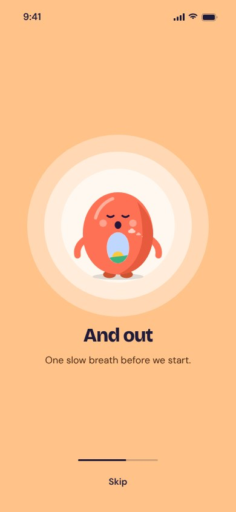
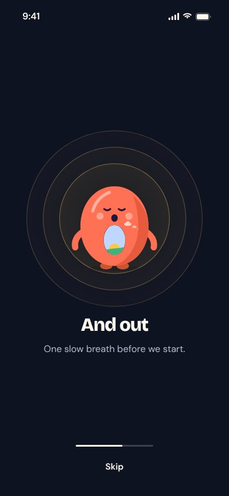
Motion Xero settles up 48px (900ms) inside three soft rings, then the rings and Xero breathe together for one 10 s cycle: 4 s in (scale .82 to 1.06), 6 s out. The rings are the only pacer. The headline arrives (600ms, 90ms stagger) with Breathe in; at 4000ms it swaps for And out (500ms fade and 6px rise; only one phrase is ever on screen, full contrast). On the out-breath two small, soft cream breath puffs start about 9px clear of his mouth and drift 16px outward as they fade (6 s). A hairline under the copy fills left to right over the 10 s (linear) to show the screen moves on by itself, above a quiet Skip. Gentle haptic at 0 and 4000ms marking the turn; auto-advances at 10.4 s.
002
Welcome
Motion Continues the launch scene: the two paper hills settle up (0, 120ms; 900ms settle; the crest under Xero fades into the page, no seam) and the sun climbs 60px (1200ms ease-out; dark mode: a warm amber core in a soft amber glow). Xero settles onto the hill crest (900ms, from 300ms), then waves: his right arm swings 16 degrees twice (2 x 800ms, from 1200ms) with two small motion marks. At 1100ms the cream speech bubble (above and right of his raised hand, its tail aimed at his mouth) rises in (600ms). Headline, body and dock arrive in reading order from 500ms (600ms, 90ms stagger). Light haptic on Get started.
003
What you are leaving behind
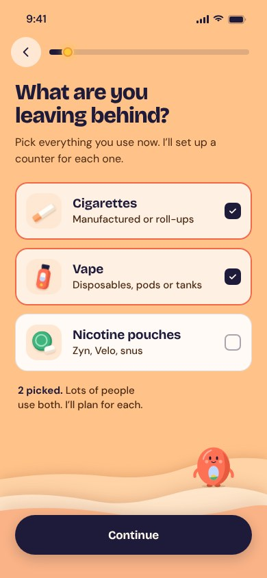
Motion Progress eases from 0 to 1/11 (900ms settle). Question and helper arrive (600ms, 90ms stagger), then the three checkbox rows and the one-line note in order. Product tiles are flat paper-cut pieces with soft paper shadows (the cigarette is unlit). The horizon strip above the dock settles up in three paper layers (0, 120, 240ms; 40px, 900ms settle) and Xero (72px, hello) settles onto its crest last (from 420ms, 900ms). At 900ms Vape gets picked: the checkbox fills and ticks, the row takes the warm selection tint and dips to .97 and springs back (520ms), and the note's count switches from 1 to 2. Selection haptic on each pick.
004
How much you smoke
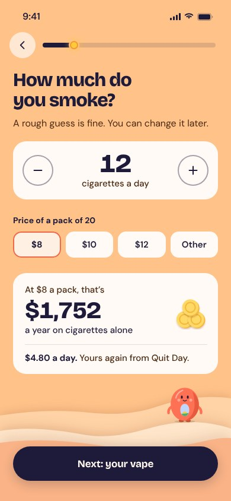
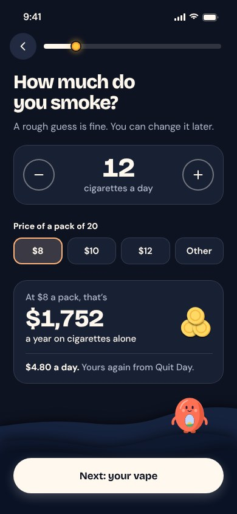
Motion Progress eases from 1/11 to 2/11 (900ms). Question, stepper card, chips and the money card arrive in order (600ms, 90ms stagger). At 900ms the plus button (outlined, the same weight as minus) presses: a quick tint fill and a spring bump (520ms), the count rolls from 11 to 12 (rises 10px, 300ms) and the yearly figure counts up from $1,606 to $1,752 (700ms ease-out); at 1100ms one more flat paper-cut coin drops onto the small coin pile beside the figure (18px drop, 420ms settle). The horizon strip above the dock settles up in three paper layers (0, 120, 240ms; 40px, 900ms settle) and a pleased, open-eyed Xero (72px) settles onto its crest last (from 420ms). Selection haptic on each step.
005
Your baseline
Motion Progress eases from 2/11 to 3/11 (900ms). Question arrives, then the hero card: 32 counts up (850ms, from 300ms) while the split bar grows left to right, cigarettes then vape (700ms each, 120ms apart), and the two legend lines fade in under their segments. Under a hairline the two cost figures ($2,555 a year | 365 hours of smoke breaks) count up side by side (850ms), then the one-line estimates note fades up (600ms). The horizon strip above the dock settles up in three paper layers (0, 120, 240ms; 40px, 900ms settle) and a calm Xero (72px) settles onto its crest last (from 420ms). No haptic; one soft tick when the counts land.
006
When cravings hit
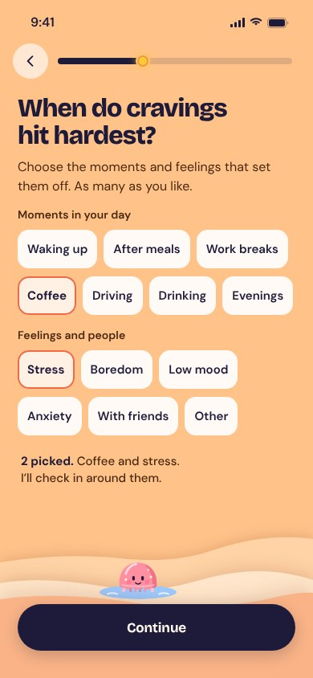
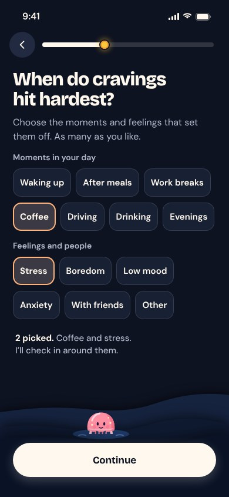
Motion Progress eases from 3/11 to 4/11 (900ms). Question, then the two labelled chip groups (natural-width chips in balanced rows), Other as the last chip of the last row, and the one-line count arrive in reading order (600ms, 90ms stagger). The horizon strip above the dock settles up in three paper layers (0, 120, 240ms; 40px, 900ms settle) with a small pond in its dip, and Jelli (cravings are hers, 80px) rises into the pond last (from 420ms, 900ms settle), then floats gently (5 s bob). At 900ms Stress takes the kit selection (warm tint and outline) with a 520ms spring bump (scale 1.1) and a selection haptic; the count reads 1 picked, then bumps to 2 picked and names both.
007
Make it personal
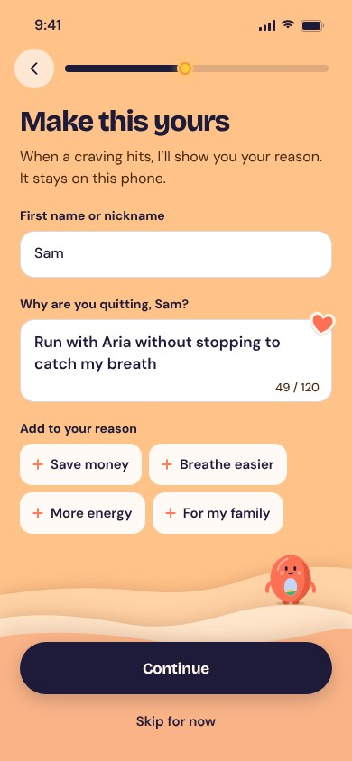
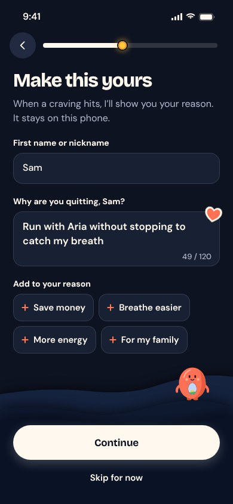
Motion Progress eases from 4/11 to 5/11 (900ms). Question and both fields arrive (600ms, 90ms stagger). The reason field takes focus (its own 2px coral focus ring fades in, 200ms); from 800ms the reason types in at 26ms a character with a blinking caret (about 1.3 s) while the count ticks 0 to 49 of 120; 700ms later the keyboard drops and the field blurs (focus ring and caret fade, 300ms), leaving the reason filled, and a small paper heart sticker pops onto its corner (620ms spring). The four + suggestion chips arrive (600ms, 90ms stagger); tapping one appends it to the reason with a 520ms spring on the chip. The horizon strip above the dock settles up in three paper layers (0, 120, 240ms; 40px, 900ms settle) and Xero (68px, hello) settles onto its crest last (from 420ms). Light haptic on Continue.
008
Onboarding obstacles
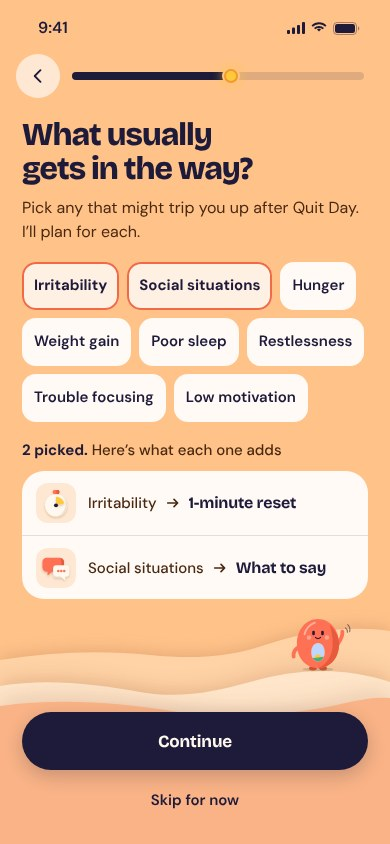
Motion Progress eases from 5/11 to 6/11 (900ms settle). Question, the chips (006's pattern: natural widths, balanced rows of three, three and two) and the what-each-adds list (Irritability, 1-minute reset) arrive (600ms, 90ms stagger). At 900ms Social situations takes the kit selection with a 520ms spring bump and a light selection haptic; the count bumps from 1 picked to 2 picked and a second row (Social situations, What to say) settles in under the first (700ms settle). The horizon strip above the dock settles up in three paper layers (0, 120, 240ms; 40px, 900ms settle) and Xero (64px) settles onto its crest last (from 420ms), then waves: his right arm swings 16 degrees twice (2 x 800ms, from 1300ms).
009
Onboarding NRT
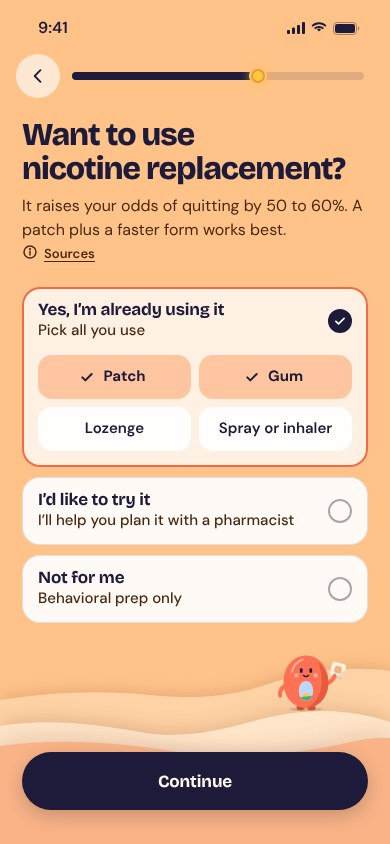
Motion Progress eases from 6/11 to 7/11 (900ms) as the question, one short evidence line with a single Sources info link (tap opens the Cochrane 2018 and 2019 citations in a sheet) and three option rows arrive (600ms, 90ms stagger). At 900ms the first row selects (kit selection: warm tint, outline, ring fills and ticks, 250ms, selection haptic) and the card grows and its product chips unfold inside it (height 0 to auto, 420ms settle), then Patch and Gum fill with the warm tint and a small tick (tint only: no second outline inside the card) one after the other 160ms apart. The horizon strip above the dock settles up in three paper layers (0, 120, 240ms; 40px, 900ms settle) and Xero (68px), holding up a small paper patch, settles onto its crest last (from 420ms).
010
Onboarding Quit Day
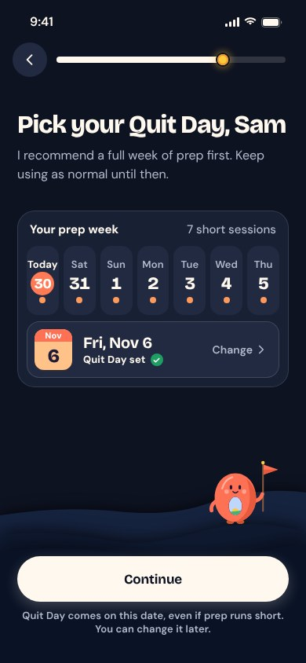
Motion Progress eases 7/11 to 8/11; title, the prep-week card (seven tiles rise 45ms apart, today's Fri 30 in its coral disc, their prep dots pop left to right), the Quit Day row (a cream card with an apricot Nov 6 date page and a Change label with a right chevron: the tappable date picker), the hold button arrive in order, while the horizon strip above the dock settles up in three paper layers (0, 120, 240ms; 40px, 900ms settle) and Xero (80px, holding the coral Day Xero flag with its pennant lowered) settles onto its crest last (from 420ms). Holding fills the button left to right over 1500ms with a soft ticking haptic; on complete the button shows its done state, Quit Day set (success haptic), the coral Day Xero flag Xero holds runs up its pole (44px, 700ms settle) while he bumps (520ms), and the row's caption swaps Quit Day, recommended for Quit Day set with a green tick (300ms crossfade). 1200ms later the done button crossfades (350ms) into Continue. Tapping the Quit Day row opens the date wheel.
011
Plan building
Motion A short build beat. Progress eases 8/11 to 9/11 while the left-aligned title arrives and the horizon strip above the dock settles up in three paper layers (0, 120, 240ms; 40px, 900ms settle), then Xero (72px, cheer) settles onto its crest (from 420ms). Three plan pieces (Quit Day Fri, Nov 6 on a cream card, waves to watch with two calm paper swells, your reason) settle up one by one, 420ms apart (900ms settle each), each warm paper-cut icon landing with its row; a light haptic as each row lands. At 2100ms the status line swaps to 'Built from your answers' with the screen's one green check popping in (420ms), Xero bumps (520ms spring, success haptic) and the button arrives.
012
Plan reveal
Motion Progress eases 9/11 to 10/11; title arrives and the underline draws under 'ready'. The Day Xero medallion is the hero: its cream coin, centred and glowing warm amber in both modes, pops in (700ms spring, from 300ms); a soft paper ground (cast shadow, no crest line) fades in under it; Xero, smaller, settles onto that ground to its lower left (900ms, from 450ms) and cheers, bobbing. The caption arrives, then the stamp card: Prep 1 pops in its up-next form and Prep 2 to 7 pop in quieter (locked: faint ring, 14px numeral, no padlocks), 90ms apart (from 900ms). The button arrives after. Light haptic when the medallion lands and on the button.
013
Two nudges
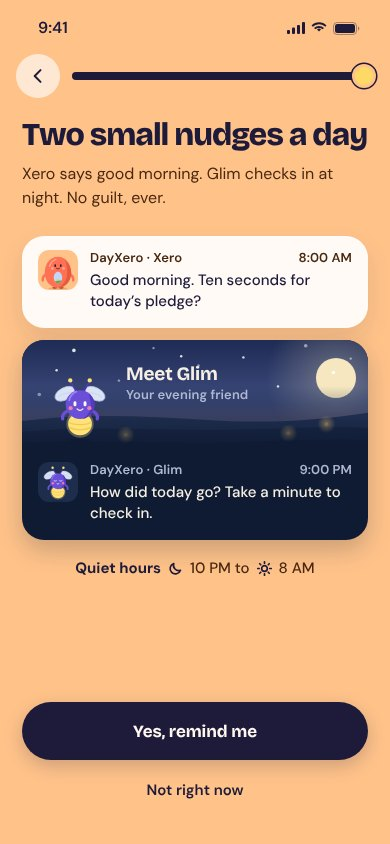
Motion Progress fills to 11/11 (900ms) and the sun lands at the end of the bar. Title and helper arrive, then the two nudges settle in 380ms apart, each with a soft notification haptic: Xero's 8:00 AM card, then Glim's 9:00 PM card (the same notification card), which carries a night scene as inset header art (its own rounded corners inside the card) introducing Glim (72px, hello, on the hill under the moon; stars twinkle and fireflies drift, ambient). The quiet-hours line (moon 10 PM to sun 7 AM, matching Settings) arrives last (600ms, from 1400ms).
Paywall
Calm, credible, one plan picker.
014
Paywall
Motion Calm arrive only: headline, Xero (settles into his small cream disc, 900ms), the three small paper-cut coral stamps arrive and their cream ticks draw in 90ms apart, then the Yearly hero card and the Monthly and Lifetime rows, then the trial line, and under the button the one-line auto-renew note. $39.99 appears in the headline, the Yearly row and the end of the timeline (Nov 6, $39.99 charged). The Yearly row (its 7 days free pill on its top edge) takes the kit selection at 800ms (warm tint, outline, ring and tick; selection haptic) and the trial line draws left to right (900ms) with its three nodes fading in as the line reaches them. No springs, no shine: this screen stays quiet.
Today
Prep, Day 7, through the day, evening with Glim.
015
Today, prep week
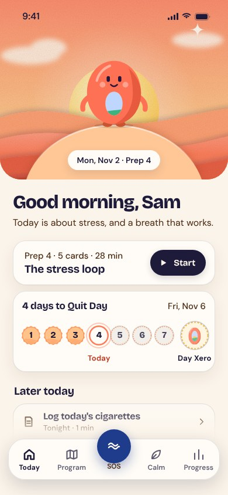
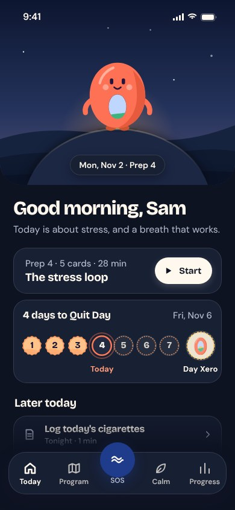
Motion The dawn sun rises behind the hills (2.6s) while Xero's paper-cut knoll rises 20px into place (900ms) and Xero settles onto it (900ms), then bobs gently. The date pill, greeting, today line and the session card with its single Start button arrive with a 90ms stagger. The countdown card is the one meter: its 4 counts down from 7 (850ms), Prep 1 to 3 stamps rise in one by one (90ms apart, no spring: earned earlier), today's open Prep 4 slot breathes its coral outline (2.4s loop), and Prep 5 to 7 and the Day Xero coin wait in dashed rings. 'Later today' and the top of its quiet list rise in last under the tab bar (600ms), so the page reads as the top of one scroll. Light haptic when the countdown lands.
016
Today, after Quit Day
Motion The dawn sun rises (2.6s) behind the centred cream disc as it fades up (700ms). At 600ms the 7-day badge stamps onto the disc (spring, 620ms) and a shine crosses it (1.4s, from 1.2s); Xero's own paper-cut knoll rises 20px into place on the hills beside it (900ms settle) and Xero settles onto it (900ms), does one cheer hop at 1.3s, then bobs. The date pill, greeting, '7-day badge earned' and the stats line arrive with a 90ms stagger while $49 and 84 count up (1.1s). The '7 days to your 14-day badge' chip arrives next and its small 14 ring sweeps to half (1.4s). Last, 'Now' and the top of the Now card rise into the bottom of the screen (600ms) so the page reads as the top of one scroll. Success haptic on the stamp.
017
Today, through the day
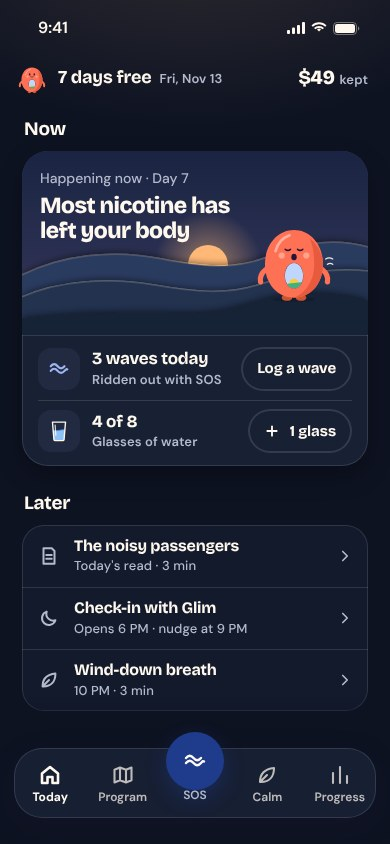
Motion Today, scrolled. The compact header (Xero full figure at 32px, 7 days free, $49 kept) is already pinned. 'Now' and its one illustrated cream card arrive (600ms): inside it the paper-cut hills rise 16px back to front (100ms apart, 900ms settle), Xero settles onto the front knoll (900ms) and breathes, his breeze marks drifting; the title and the two actions under the card's hairline fade up after (90ms stagger). At 1.2s '+1 glass' presses: a '+1' floats up from the count, the count bumps from 3 to 4 (spring bump, 520ms) and the water in the drawn glass rises from 3/8 to 4/8 (600ms settle). 'Later' and its one quiet list arrive last (90ms stagger, no lift). Light haptic on the tap, soft success tick on the bump.
018
Today, evening
Motion Evening Today, all slow. The sky fades in (700ms): a dim lavender-peach dusk in light mode, the midnight meadow in dark, with stars twinkling (kept clear of the status bar and the words) and fireflies drifting; the paper-cut knoll rises 24px into place (900ms) and Glim, awake and waving hello, settles onto it (900ms) then keeps a slow bob; the warm pool his belly casts on the knoll fades up with him and breathes with his glow (2.6s loop). Greeting, waves line and the check-in card arrive with a 90ms stagger; inside it the six done nights fade in left to right (90ms apart, no springs) and Friday's waiting 7-night badge (44px) sits in a solid gold ring that breathes (4s in, 6s out). Soft haptic on appear only.
Craving SOS
Ocean and Jelli only here. Calm motion, one +1.
019
Craving SOS
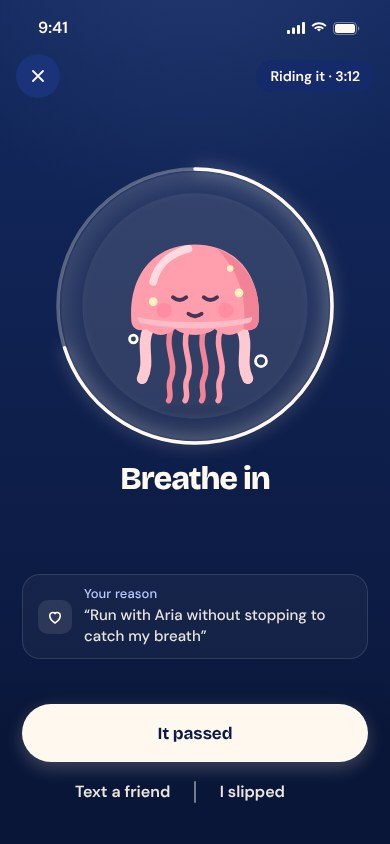
Motion Calm, no springs. Jelli and the single pacer ring (with its soft glow) fade up together and breathe as one: 4s in (scale up), 6s out (scale down), looping. The ring shows the breath: a cream arc sweeps round the ring from the top over the 4s in-breath while a soft inner fill swells behind Jelli, then the arc unwinds and the fill ebbs over the 6s out-breath. The breath word under Jelli crossfades in 600ms between 'Breathe in' and 'and out' in time with the breath, and Jelli's mouth follows it: closed on the in-breath, a soft open 'o' on the out-breath. The ride timer counts up from 0:00 each second. The helper lines under the breath word show for the first breath only, then fade out over 1.2s at 10s; the still is mid-ride at 3:12, so they are gone there and Jelli and the word carry the pace. The quiet reason line, the button and the two quiet text buttons (Text a friend, I slipped) arrive with a slow 90ms stagger. Touching and holding Jelli gives a soft rhythmic haptic at the breath pace.
020
Craving passed
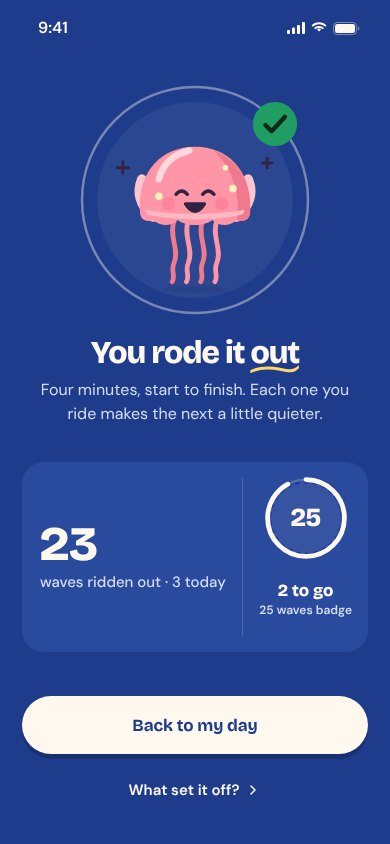
Motion The completion beat, gentle. The pacer ring from SOS closes: a cream arc draws round from the right of the top gap to its left (900ms), and in the gap it leaves, the check seals it: a cream knockout disc fades in with the sun disc inside it (500ms, at 900ms) and the ink tick draws (420ms). Jelli settles in cheering (900ms, one soft hop), the same silhouette as on SOS (arms down, no sparkles). Title and line fade up and the yellow underline under 'out' draws in. At 900ms the wave count rolls from 22 to 23 while a '+1' floats up beside it (spring, the only one on the screen). At 1.3s the wave medallion (the kit wave badge with a cream core and gold rim, no numeral, so 23 leads) fades in (700ms, no spring) and its solid progress ring extends from 22 to 23 of 25 (400ms), leaving a short gap of two that matches '2 more to your 25-wave badge'. The button and the quiet 'What set it off?' text button arrive last (it opens the optional trigger sheet). Success haptic with the +1.
021
After a slip, plan
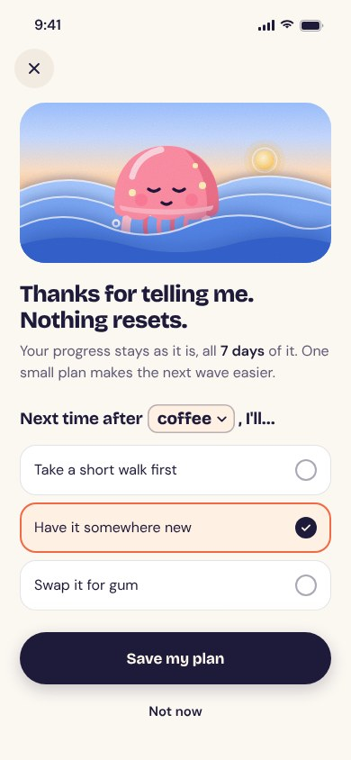
Motion Quiet tier, no springs. The paper-cut sea card builds back to front: the four wave layers rise 40px into place 100ms apart (900ms each) while Jelli (calm) settles down into the water between them (900ms), then keeps a slow bob, half in the sea; the small sun fades in last (in dark mode a warm, low sun sitting on the water with a horizon glow). The title and the progress note arrive with a 90ms stagger, then the if-then line, whose 'coffee' token is tappable (it opens the short moment sheet: Coffee, Stress, After a meal, Something else; its chevron nudges down once at 900ms), and its three option rows settle in one by one (120ms apart); the chosen row carries the kit's warm selection (apricot tint in light; in dark the kit's apricot tint at about 13% with an apricot edge) and its tick. On Save the button turns to its done state and a soft success haptic plays.
Program
The path, with prep stamps on its nodes.
022
Program, prep week
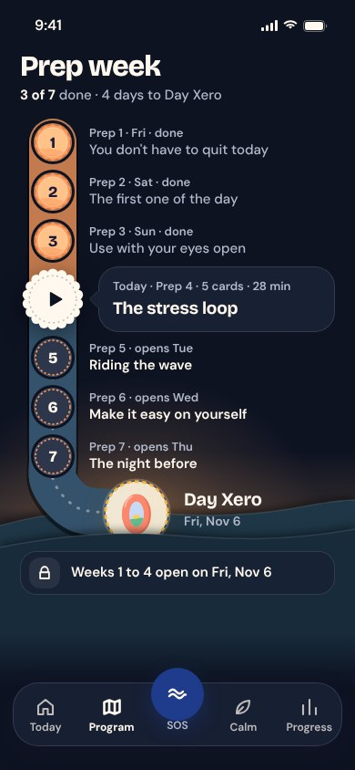
Motion The 'Prep week' header and its progress line arrive (600ms, 90ms stagger). The road, one continuous paper-cut ribbon from Prep 1 to the Day Xero coin, fades in (600ms), then its finished stretch fills prep-orange from the top to today's stamp (1100ms, ease); Prep 1 to 3 stamps and their rows arrive as the fill reaches each one (about 360ms apart). Today's Prep 4 play stamp lands as the fill arrives (600ms arrive, no spring) with the up-next card beside it, then the stamp breathes a soft pulse ring every 2.4s. Prep 5 to 7 (dashed rings on cream) fade in, the dotted guide fades in along the road to the horizon, the two hills rise 24px into place back to front (100ms apart, 900ms), and the Day Xero coin rises onto the horizon like a sunrise (1100ms settle) while the warm glow behind it brightens (1.2s) and its label fades in. Last, the locked 'Weeks 1 to 4' row arrives on the hill (600ms). Light haptic when the fill reaches today.
Prep session
The hand on a dark card table; cards carry the colour.
023
Session hand
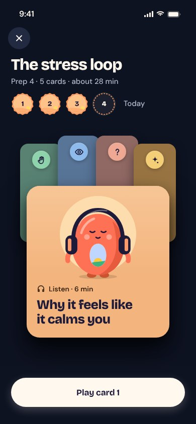
Motion Title, line and the prep stamps arrive (600ms, 90ms stagger). The four back cards deal in from below one by one and stand level behind, outer two a step lower (760ms settle each, 120ms apart, from 300ms), each showing only its icon: Try mint, Reveal sky, Myth or fact rose, and Your stress plan in the plan's honey (dark mode: the back cards sit at dusk tints of their colours, only their round icon spots stay bright). Then card 1, the apricot Listen card, rises level in front of them (900ms settle at 820ms) and Xero, in his headphones, settles in front of its sun (700ms at 1200ms) and sways gently to the music (5s bob loop). The button arrives last. Light haptic on each card landing, a medium one when card 1 lands.
024
Session listen card
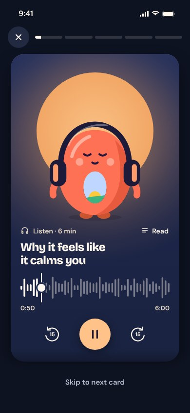
Motion The apricot player (deep dusk with a warm sun glow in dark mode) rises into place (settle 900ms) while the five-card bar arrives; Xero, in his headphones, settles in front of the sun and then sways gently to the audio (5s bob loop). The waveform bars grow from the centre line left to right (48 bars, 16ms apart, 420ms each); at 1.2s play starts: the icon swaps to pause, the played ink and the playhead knob sweep across the bars (linear, follows playback), the elapsed time under the left end counts, and the first card's segment fills as a sliver in step with playback. While it plays, the dock holds only a quiet Skip to next card link; at 80% played (4:48) the link cross-fades into the solid Next card button (300ms, light haptic). Read, top right of the player, expands the transcript under the controls (320ms ease).
025
Session card played
Motion The apricot Listen card lifts from below and flips over (rotateY, 1100ms settle) to its back: a crisp paper sun with twelve short rays and a cream band reading Listen · 6 min, landing with a slight tilt (in dark mode a soft warm glow fades up under it, 700ms at 1.1s); at 1.1s the rays fan out from the disc (500ms settle, 30ms apart) and an ink check draws across the sun (420ms, success haptic). The first card's segment fills from the playhead to full at 1.3s. Title and line arrive (600ms, 90ms stagger), then the light How was it? caption and its three quiet hairline chips (the card stays the lead); Up next (with its small mint paper-cut spot, ringed so it holds on cream) and the button arrive last in the dock. Tapping a rating chip selects it with the kit tint and outline (selection haptic).
026
Session reflect
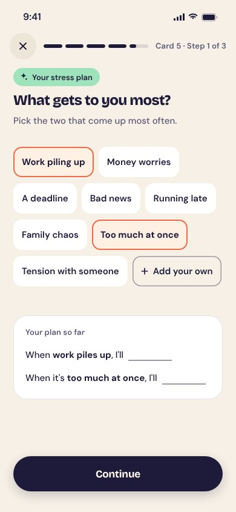
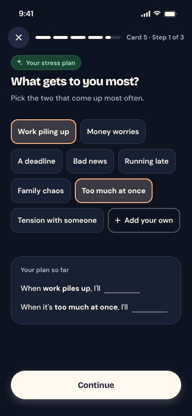
Motion The bar shows card 5 a third done with Card 5 · Step 1 of 3 beside it; the mint tag (Your stress plan; the bar label carries the step), title and line arrive (600ms, 90ms stagger), then the chips, each hugging its words in left-aligned rows, arrive one by one in reading order (600ms, 45ms apart), every option at full contrast. At 1.1s Work piling up takes the kit selection (warm tint and outline, 250ms) with a 520ms spring bump and a selection haptic, and at 1.5s Too much at once does the same. Each pick writes itself into Your plan so far (the phrase cross-fades into its line, 300ms), leaving the I'll blank for step 2. Picks are capped at two: tapping a third option selects it and releases the oldest pick in the same beat (250ms cross-fade, its plan line rewrites), so the screen never dims or blocks. Continue arrives last.
027
Session choice
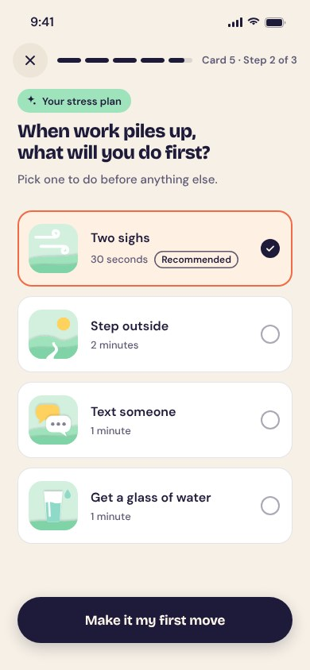
Motion The bar moves to two thirds of card 5 and its label turns to Card 5 · Step 2 of 3 (500ms settle); tag, question and helper arrive (600ms, 90ms stagger) and the four option rows settle in (900ms, 120ms apart), each with its small paper-cut spot lifting in with the row. At 1.5s the first row lands as the choice: it presses down 2pt, the kit selection tint and outline fill in (300ms), the radio fills and the tick draws, and the row bumps (520ms spring) with a selection haptic; the spot's two breaths drift right 3pt and back (900ms). The button arrives last.
028
Session slider
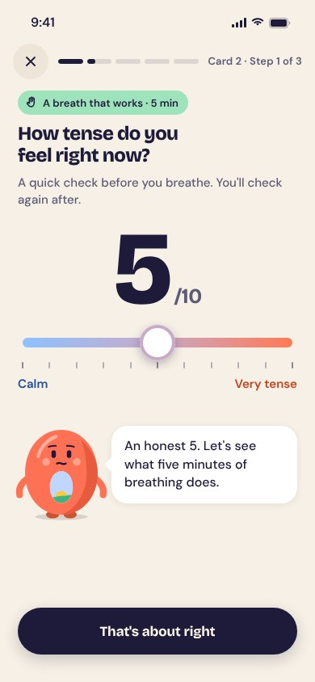
Motion The bar shows card 2 a third done with Card 2 · Step 1 of 3 beside it; the mint tag, question and helper arrive (600ms, 90ms stagger). The reading arrives as one unit: the big number, the calm-blue to coral track right under it with its 11 short ticks, and Xero standing below (fade 500ms). The thumb glides from Calm to the middle (1100ms settle, from 400ms) while the number counts 0 to 5 in step, with a soft tick haptic on each stop, and Xero's face follows the thumb as it passes (calm at 0 to 3, plain at 4, a little tense at 5 and 6, tense from 7: a 150ms cross-fade per change). His line arrives last in a bubble beside him, its tail pointing to him (600ms); dragging rewrites the line at each whole number.
029
Session commit
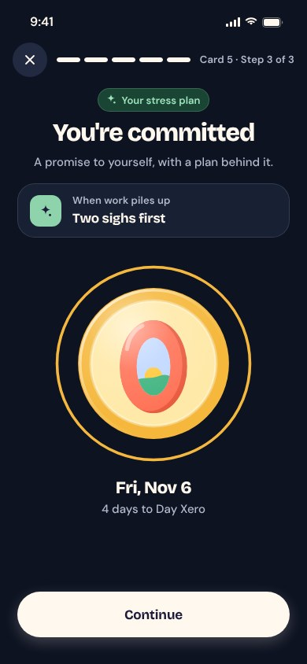
Motion The bar shows card 5 at its last step with Card 5 · Step 3 of 3 beside it; tag (Your stress plan), title, helper, your plan card (full width: When work piles up, Two sighs first), the Day Xero medal (the kit medal: gold rim with a soft highlight along its top-left edge, the brand mark, a soft shine; resting faded inside its empty hold ring) and the date, set a step under the title, arrive (600ms, 90ms stagger). Holding the button (3s, auto at 1.2s) fills the button and fills the thin muted track around the medal with gold in lockstep (linear, a soft haptic tick every 0.5s); letting go drains both (300ms). On held: the ring stays closed in the medal rim's gold, the medal stamps to full colour (620ms spring), and a soft shine crosses its face, the date bumps (520ms spring), the title cross-fades to You're committed and the helper to its second line (400ms), card 5's segment fills, and the button shows Committed (success haptic). 1200ms later the done button cross-fades (350ms) into Continue.
030
Session breathe card
Motion The bar shows card 2 two thirds done with Card 2 · Step 2 of 3 beside it; the mint step tag (Try · 5 min) arrives (600ms). The mint Try card, A breath that works in the moment (deep dusk with a warm glow in dark mode), settles in (900ms) with the breath shape drawn faint across it; the technique it guides is two sighs. At 0.4s the guided breath plays and the shape is its pacer: the ink lights along the curve in time with the voice (the first breath rises and levels, the top-up sip rises again, then the long slow out falls away) and each point lights with its label as the ink reaches it (In at 0.8s, A little more pops coral at 1.2s, Long, slow out at 1.6s, its label set on the falling limb at the right, under the curve's tail, while the playhead pulses on the limb); every breath the lit ink starts over and the elapsed time under the title counts on. Small Xero beside the time, on his own ground shadow, breathes with the guide (10s in and out). The three notes arrive as one list, row by row (600ms, 90ms stagger). While the breath plays, the dock holds only a quiet Skip to next card link; at 80% (4:00) it cross-fades into the solid Next card button (300ms, light haptic).
031
Session mission
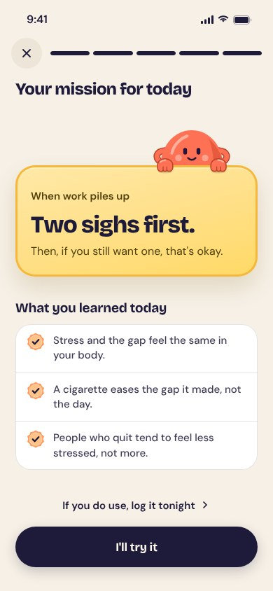
Motion The full bar and the heading arrive (600ms). The honey mission card (the 029 medal's gold: its pale face to its face gold, with the medal's gold rim), the one hero, rises in (settle 900ms); Xero climbs up behind it, his head and his bent arms (elbows out, shoulders over the edge) rising over the top edge (settle 900ms at 360ms), then his two hands, drawn as their own shapes, land gripping the card's top edge (spring pop 700ms at 1150ms, light haptic) and he blinks. The card's label, line and note arrive inside it (600ms, 90ms stagger), then what you learned arrives as a light card, row by row, each with its small paper stamp (600ms, 90ms apart), and the log link and button arrive last in the dock.
032
Session complete
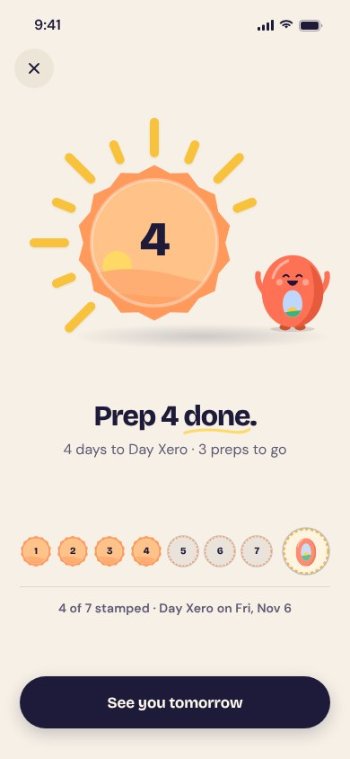
Motion A ring of crisp paper rays (rounded strips in one deep sun yellow, set close around the rim, alternating long and short, clear of the rim, the same sun as 025, open where Xero stands) fans out behind (each ray grows from the centre, 500ms settle, 25ms apart, from 300ms) and then turns very slowly (26s loop); the Prep 4 medal stamps in (spring, 300ms) and shines; Xero settles beside it, standing a clear 16pt off its rim (the medal's little sun sits on its far left side, away from him), on one ground shadow, cheering, and bumps at 1500ms. Title (underline under done) and the line (4 days to Day Xero · 3 preps to go) arrive; the shelf arrives, stamps 1 to 3 pop in left to right (110ms apart), then stamp 4 lands with a stamp and a shine (medium haptic) while the count ticks 3 to 4; the waiting stamps 5 to 7 and the Day Xero medal at the end of the shelf fade in last (in dark mode stamp 4 sits lifted on a warm glow and the waiting Day Xero tile is dimmed).
Lesson
Reading ground, short pages.
033
Lesson intro
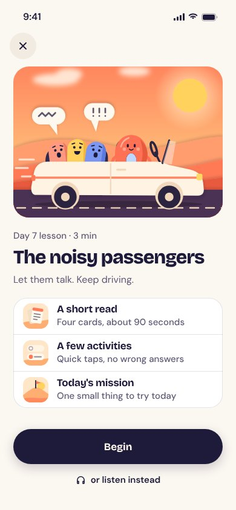
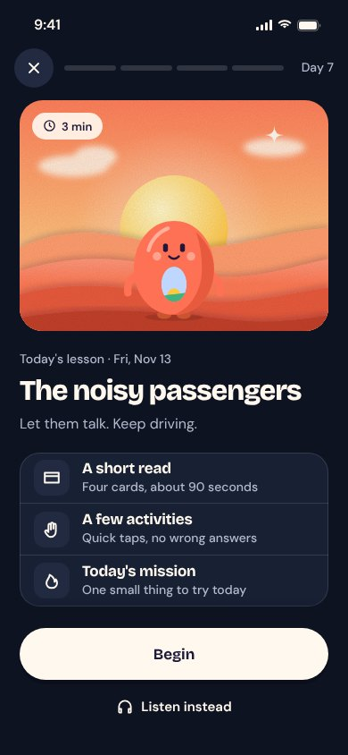
Motion The paper-cut road card fades up (600ms) and the little open-top car rolls in from the left (900ms settle curve) with Xero at the wheel, then idles with a 2px bounce (1.2s loop). The three back-seat passengers (grey, yellow, blue; Xero is the only coral figure) chatter: their two speech bubbles pop in turn (spring 420ms, 700ms apart) and keep pulsing on a 2.4s loop while Xero keeps his eyes on the road. The meta line, title, subtitle and the three 'inside' rows (each with its small paper-cut spot: cards on a hill, a kite, a summit flag) arrive with a 90ms stagger, then Begin and the listen link. Light haptic on Begin.
034
Lesson cards
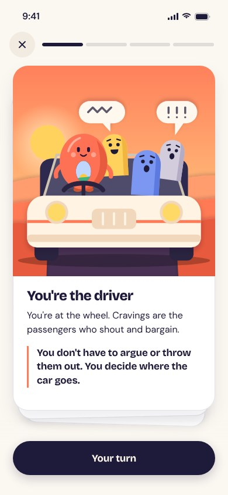
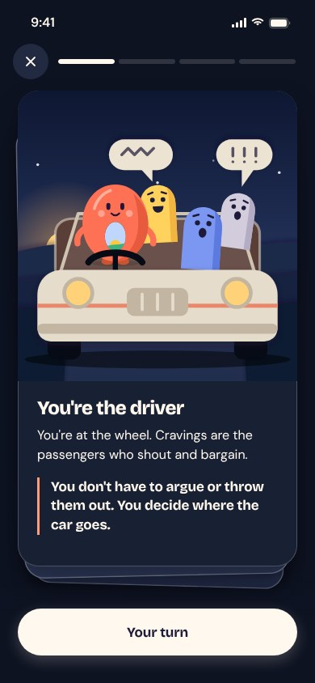
Motion The progress bar shows card 1 of 4 (first segment full). The stack edges arrive first, then the top card is dealt face down and turns over at 450ms (rotateY 180 to 0, 800ms settle curve, light haptic as it lands). On the paper-cut road, which runs full-bleed across the top of the card, the sun pops (600ms), the little car with Xero at the wheel drives up the road toward you (900ms settle from 700ms, then a 1px idle bounce), and the two passengers' speech bubbles pop in turn (420ms spring at 1.1s and 1.7s, then a 2.4s chatter pulse). The two-line paragraph and then the pull line arrive with a 90ms stagger, then the Your turn button. Tapping Your turn flips the card to its back (reflection prompt) the same way.
035
Lesson audio
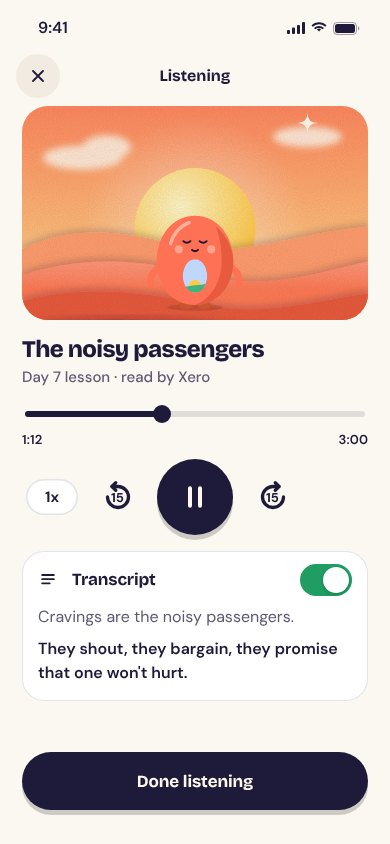
Motion Art fades up (light: a warm paper-cut dawn with flat paper clouds, the sun low behind Xero, rising between two lifted hill layers) and Xero settles onto his hill in his headphones (900ms), then bobs gently while audio plays; three thin cream sound arcs each side pulse outward (2.4s loop, 220ms apart) for as long as he is reading. The centred title and line arrive, then the scrubber draws from 0:00 to 1:12 over 1.2s with the elapsed time ticking in step, the knob pops on arrival, and the play button bumps into its pause state. The 1x, Transcript and Timer pills arrive together as one row (same icon+label pill): 1x cycles 1x, 1.25x, 1.5x with a selection haptic, Transcript rotates its chevron (250ms) and opens the transcript below (500ms), Timer opens the sleep timer options. The live caption under them shows the line Xero is reading now: three small coral level bars pulse (900ms alternate) and each new spoken line cross-fades in (300ms out, 300ms in). Done listening arrives last (600ms) as an outlined button and stays outlined until 80% has played (2:24 of 3:00), when it cross-fades into the solid primary button (300ms, light haptic), as on the session players.
Progress
Stats and the badge shelf.
036
Progress
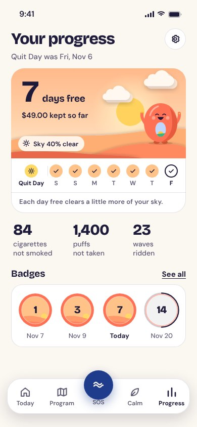
Motion The hero card fades up and its two small paper clouds part around the sun (900ms settle, left cloud slides left, right cloud slides right), leaving the numbers on clean sky; Xero settles onto his hill at 500ms and bobs. The 7 counts up (900ms) and $49.00 counts up beside it, then the Sky 40% clear tag fades in. In the same card, under the sky, the strip fades in left to right (70ms apart from 700ms): the Day Xero sun labelled Quit Day, then the seven days free (six apricot ticks and today's ringed tick), then the one-line sky note fades in at 1.3s. The three larger stats (equal columns) count up from 0. The Badges header carries only See all. The badge shelf arrives as one card, each medallion with only its date under it: the three earned day badges stamp in (140ms stagger), the 7-day badge gets a shine at 1.2s, then the 14-day badge fades in with its ring at half. No haptic on load.
Health
What is changing, with sources.
037
Health timeline
Motion Title and the Vaping / Smoking chips arrive; each card's larger paper-cut spot (its own motif: sunrise, clouds blowing away, a summit flag, a calm lake, a hand mirror with a sparkle) lifts in with the card, then the rail draws top to bottom (900ms clip reveal from 300ms) as one continuous line through the node centres, solid through today and dashed on to Ahead, while timeline cards arrive with a 90ms stagger. The rail node is each card's one status signal (plain dot for the start, green tick for each finished change, half-filled for under way, open ring for ahead); the line under each title is only its timing. The under-way card leads with a warm tint (an apricot hairline in dark mode); its node sends out a soft pulse ring every 2.4s (from 1.2s) while its 4px apricot bar fills to 50% (900ms settle). All spots and text sit on one column. Every card ends in a chevron and opens its detail. Switching chips cross-fades the list (250ms) with a selection haptic.
038
Health change
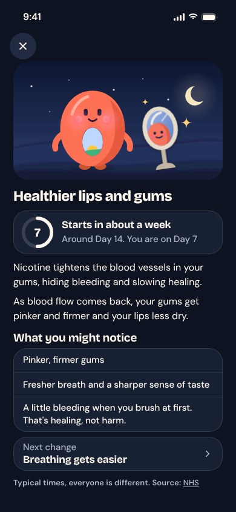
Motion The paper-cut dawn card fades up (light: a cool blue dawn sky over warm layered paper hills and a low gold sun; dark: night sky, moon and stars), its hills lift, Xero settles onto the front hill (900ms) and a soft pink glow blooms on his cheeks (600ms fade) while the little standing mirror beside him, which shows his smiling face reflected, catches a sparkle that pops (spring 420ms) and twinkles on a 2.4s loop. Then title, the timing card (the ring sweeps to half while the 7 in it counts up: Starts in about a week (around Day 14), you are on Day 7), the two paragraphs, the 'What you might notice' heading and rows, the Next change row, and last the source footer (as on the health timeline) arrive with a 90ms stagger; the Next change row opens the next change in the timeline (push). No haptic.
Milestones
The celebration and the share card.
039
Milestone Day 7
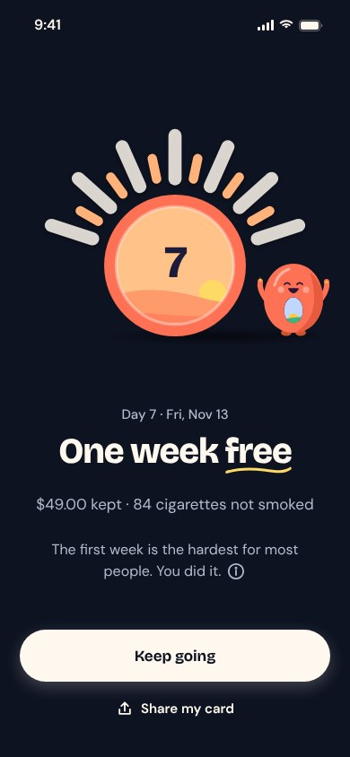
Motion The badge sits on the centre line of the text, and two layers of soft paper rays (rounded capsules; in dark, long cream rays at 85% with short apricot rays between them), centred on the badge, fan out over its top like a sunrise (fade and scale from 90%, 700ms), then sway gently (3 degrees, 8s loop, the two layers in opposite directions). At 250ms the Day 7 badge stamps in (620ms spring, success haptic on landing; the kit day badge, its little sun clear of the 7) and a shine crosses it at 900ms. Xero settles in at 500ms on the same ground to the right of the badge, 16px clear of it, and cheers (bob loop); one soft shadow under both. Date, headline, the quieter stat line (regular weight, secondary colour; both numbers count up from 0 at 1.1s, 900ms) and the line arrive with a 90ms stagger; the line ends in a small info button (44pt target) that shows the source (smokefree.gov) in a popover. Keep going and Share my card arrive last.
040
Share card
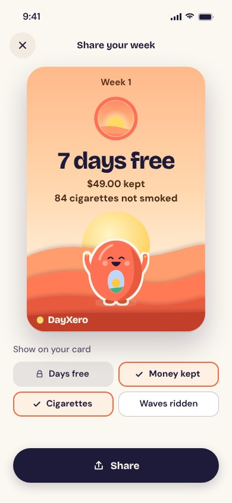
Motion The card (about 300pt wide, no avatar, Week 1 centred at the top) rises in and settles (900ms): its paper hills lift over a low sun, Xero (centred and larger, with a cream paper rim so he stands off the coral hills) cheers in front of the sun, well below the stat lines and above the wordmark band, and the smaller filled day medallion (a sunrise sky with a big sun over the hills, no number since the line below says 7 days) stamps at 400ms. The Show on your card chips arrive (Days free sits in its own filled tone with a lock, no border, and no toggle); at 1.3s the Cigarettes chip turns on (selection haptic) and its line fades into the card while the card bumps. Share sits in the dock; tapping it opens the system share sheet with the rendered card.
Logging
Log sheet and a craving, with a done toast.
041
Log sheet
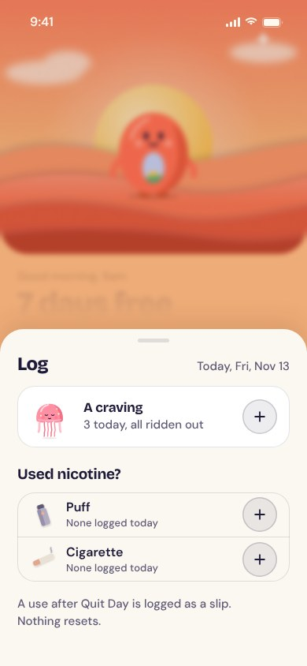
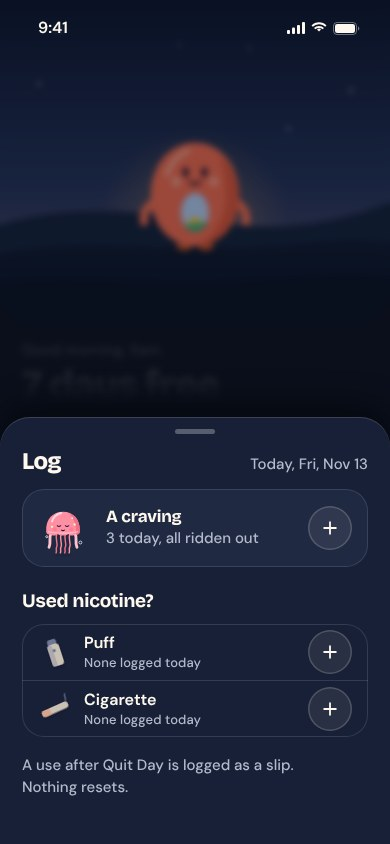
Motion Today (the dawn hero with Xero) softens behind the sheet: a soft 3px blur under one uniform scrim (a warm coral veil at 16% in light, navy at 40% in dark, no desaturation, so Xero keeps his colour) while its type fades back to 30% and is masked out to nothing before the sheet edge (250ms), as the sheet slides up from the bottom (450ms settle curve, light haptic as it lands). The craving row arrives first with a larger Jelli in place of an icon, then the Used nicotine? section header (the craving form's header style) and the quieter Puff and Cigarette group, each with a small paper-cut object in place of an icon (90ms stagger), then the slip note, which sits well clear of the home indicator. All three rows end in the same 44pt tonal + button; tapping one bumps it and pushes the matching form.
042
Log a craving
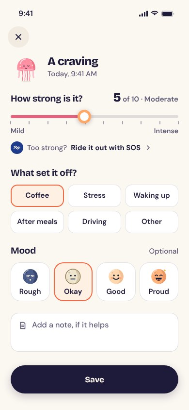
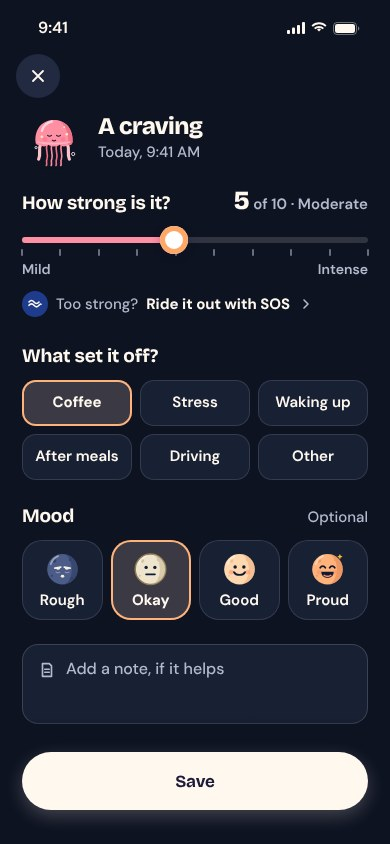
Motion Jelli settles in beside the title (900ms) and stays calm. Sections arrive with a 90ms stagger; the strength fill (Jelli's pink) slides to 5 (700ms settle) along its ten step ticks and the apricot-ringed knob lands on the fifth with a light haptic (a selection tick haptic per step when dragged). Under the scale, the SOS path (a small ocean wave disc, Too strong? Ride it out with SOS, and a chevron) arrives with the strength section and pushes SOS when tapped. The mood row uses four little moons (about 30pt) with the evening check-in's expressions (craters, a crescent shadow; navy Rough with tired lids, cream Okay with a darker outline, pale apricot Good, apricot Proud); a chosen mood shows only the kit chip selection. The note field is a taller multi-line field. Save rests until tapped: it presses, turns into its done state with a tick (success haptic) and the label becomes 'Saved · 4 today' with the 4 bumping (no toast); after 1.2s the form closes.
Slips
Serious and kind. Nothing resets.
043
Slip: thanks for telling me
Motion Calm, no springs. The sea scene card fades up (its sun a warm glow in dark mode, never a ringed disc), its rounded cloud drifting slowly; Jelli (calm, about 120px tall) settles onto the water from below (900ms) and then bobs. Title, the one line 'Nothing resets.' and the two tiles arrive with a 90ms stagger; the 7 and the 40% count up from 0 over 850ms; the day ticks fade in left to right (60ms apart from 500ms: the Day Xero sun, six ticks, today's ringed tick) while the sky picture, fading in from the tile's lower right through a soft radial mask (clouds and open sky only; the scene above holds the one sun), slides its cloud bank right to show 40% clear sky (900ms). One centred line, 'Slips don't cloud it.', arrives under both tiles, then the button and 'Not now'. Soft haptic on appear only.
044
Slip: talk it through
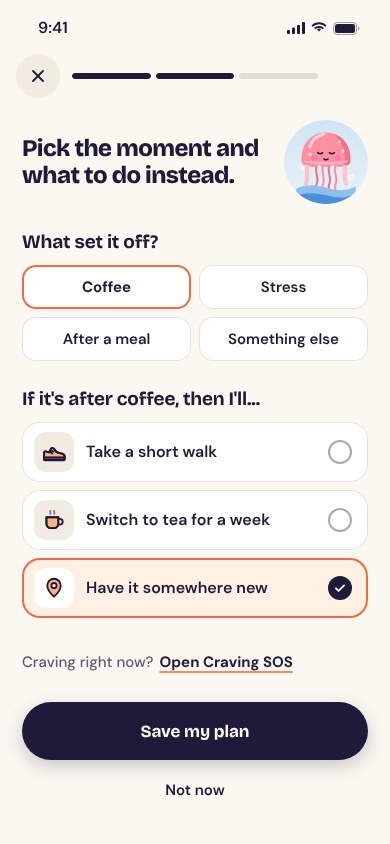
Motion Jelli settles into her small sea disc at the right of the title (900ms, then a slow bob; the same placement as 045), then the title, trigger chips (the chosen Coffee chip is outline only), the if-then heading, the three rows (peach duotone glyph tiles, as on the NRT products list) and the 'Craving right now? Open Craving SOS' link arrive top to bottom (600ms, 90ms stagger). At 1.3s the 'Have it somewhere new' row lands: its 2px outline, the kit's warm selection tint and filled tick settle in over 520ms, the screen's one filled selection; the other rows stay fully readable. Light selection haptic on the land.
045
Slip: what happened
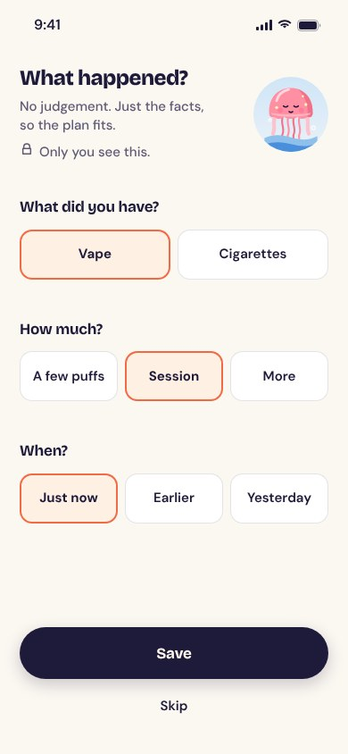
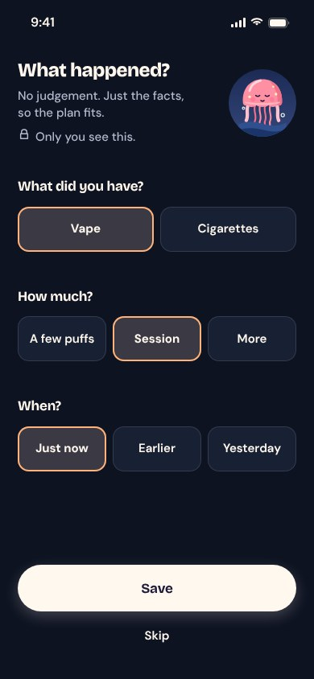
Motion Optional step (reached from 'Add what happened'): no progress bar and no X: the 'Skip' link is the way out. Calm, no springs. Jelli settles into her small sea disc at the right of the title (900ms, then a slow bob; the same placement as 044); the title, helper and the 'Only you see this' line arrive, then each question group arrives in order (600ms, 90ms stagger), then Save and Skip. Selected chips use the kit's warm selection (tint plus 2px outline). Chips in a row have equal widths. Tapping a chip tints it and draws its 2px outline in 250ms with a light selection haptic.
046
Slip: plan saved
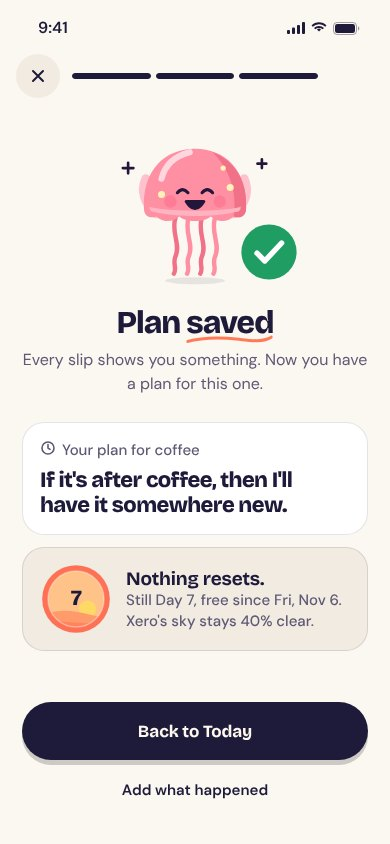
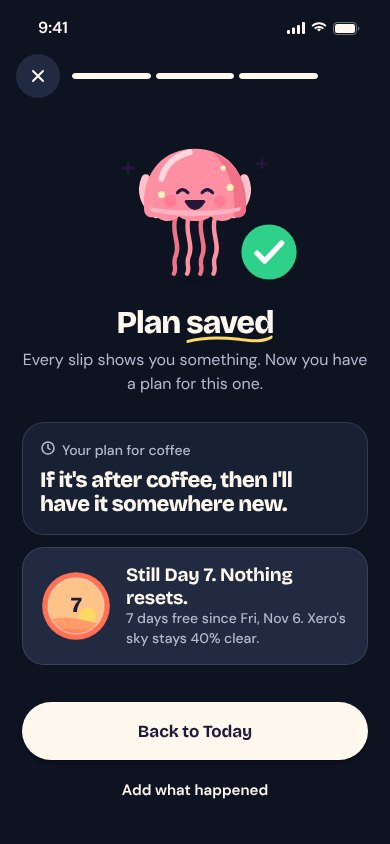
Motion Done beat, no X (Back to Today is the way out): Jelli's small sea disc fades in (as on 044 and 045), Jelli (cheer) settles in (900ms) above a soft shadow on the water (both modes), then the small apricot check pops on the shoulder of its bell (pinned there, it bobs with Jelli) and its ink tick draws (320ms later, 420ms) with a success haptic. Title arrives and the hand-drawn underline sits under 'saved', then the plan card settles up from 48px like a card being put down (900ms), then the plan card's 17px line, then the Day 7 card (one line: 'Your sky stays 40% clear.') arrives with the badge fading in intact (no stamp: nothing was lost or earned). Button and link arrive last.
NRT set-up
Step by step, with sources and a done beat.
047
Why NRT helps
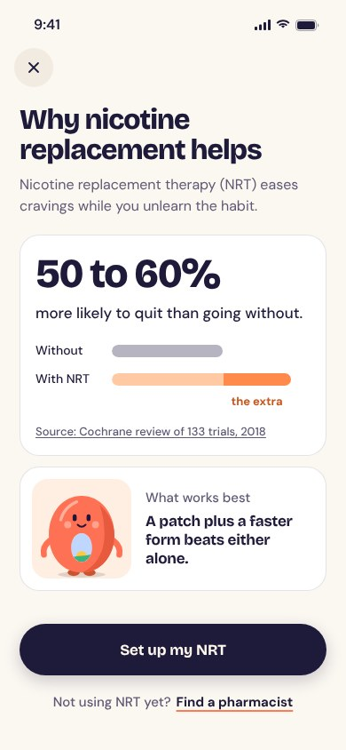
Motion Reading pace, no springs. Title and lead arrive, then the evidence card: '60%' counts up from 50 (850ms) while the 'Without' and 'With NRT' bars grow from the left (900ms, the apricot bar 150ms later, its deeper tail showing the extra), the With NRT bar stops at 90% of its track, and at 1.3s the label 'the extra' fades in under the deeper tail; then the combination card with Xero settling into his apricot art slot (900ms, then a slow bob). The two bars have no full-scale track: they only compare with each other (relative odds). The button and the 'Find a pharmacist' action link arrive last (the dosing note lives once in the flow, on the reminders screen). No haptic until the button tap.
048
NRT products
Motion Title and the subtitle (with its count) arrive, then the five product rows arrive top to bottom (600ms, 90ms stagger), then a tinted tip card arrives and Xero settles into it beside a short how-to for the selected product (900ms, then a slow bob); the tip follows the selection (Patch: 'Put a new patch on a clean, hairless spot each morning.'), cross-fading 250ms when the selection changes. At 1.2s the Patch row lands selected: the kit's tint, 2px outline and tick settle in over 520ms with a light selection haptic, and the count in the subtitle rolls from 0 to 1. Tapping a third row gently shakes the count instead of selecting.
049
NRT schedule
Motion Title and the subtitle with its 'US' country pill arrive (tapping the pill opens a country sheet), then the four schedule rows arrive top to bottom (600ms, 90ms stagger), each subtitle giving its weeks in bold, then its mg steps (muted); each row's step-down glyph (a 72x36 silhouette in a tile: the steps butted together on a hairline baseline, widths by weeks, heights by mg) arrives with it in apricot outline (the custom row's glyph is an empty dashed frame). At 1.3s the 10 week row lands selected (520ms settle, light haptic): its tile turns white and its glyph fills apricot with a deeper outline over 300ms. The pack hint arrives last.
050
NRT plan
Motion Title arrives, then the step-down chart: the chart title with 'From Fri, Nov 6' under it, then the solid apricot 21, 14 and 7 mg bars (the same three tints in light and dark, with a deeper apricot edge in light so the palest holds 3:1 on the card; widths in the 6:2:2 ratio of their weeks; the plan starts on Quit Day, Fri, Nov 6) grow up from the baseline one after another (900ms settle, 150ms apart), their labels sit just above each bar, and the week ranges arrive under them. Three compact date rows (swatch, mg, dates, chevron: tap to edit) then settle in like a plan being laid out (120ms stagger), then the 'At night' section (bold label, a one-line helper about vivid dreams, two chips) arrives. No completion here; the plan is confirmed on the reminders screen.
051
NRT reminders
Motion Title, the two reminder cards (each with a peach duotone glyph tile, as on the products list, and its time row) and the preview (a white banner, a card in dark mode, with a hairline and a soft shadow, like an iOS notification) arrive (600ms, 90ms stagger); both coral toggles slide on as they land. The flow's one dosing note sits under the preview. At 1.4s Done is pressed: the button keeps its ink colour and gains a green check (done state, no colour switch, no toast: the button is the confirmation), the bell in the preview bumps once. Success haptic on the check.
Taper
052
Pouch taper
Motion The conflict is the title: 'Your taper needs 3 weeks' arrives (soft warning haptic), then the lead (Quit Day is in 4 days; today is Mon, Nov 2, Quit Day Fri, Nov 6). The strength chart arrives with its legend (Quit Day, Runs past Quit Day): the 6, 3 and 1.5 mg bars, one apricot with a deeper edge (the heights carry the mg), grow from the baseline in turn (900ms settle, 150ms apart); the 6 mg bar is solid up to Quit Day and striped after it, the 3 and 1.5 mg bars are striped (they run past Quit Day), and at 900ms the coral Quit Day dot pops onto the axis where the 6 mg bar splits, with a coral hairline up through the split and its 'Fri 6' tag above the bar. Axis labels are the week start dates. Step rows (swatch, mg, dates, chevron: tap to edit) settle in (120ms stagger). The coral target ring on the 0 mg column (Mon, Nov 23) fades in at 1s. The X is the only way out at the top (no Skip). The primary (Move Quit Day to Mon, Nov 23) slides the coral dot and its tag along the axis into the 0 mg column's target ring over 700ms (the tag reads 'Mon 23'), the stripes fill in solid and the dates update in place; 'Save my taper as is' is the quiet secondary.
Daily pledge
Hold to pledge; the sun comes up.
053
Daily pledge
Motion After quit: the daily pledge on Fri, Nov 13 (Day 7). Light: the dawn scene (crisp vector hills and clouds: deeper hill silhouettes, no blur, no film grain, the left cloud clear of the X) fades in, and two soft hills continue the ground under the reason card and the button (fading up from the bottom) with a soft cream glow behind Xero; dark: a true navy pre-dawn sky (the kit's night sky, dawn variant: a few twinkling stars, none under the status bar or the X, navy hills) with the sun and its soft radial glow resting half behind the right-hand hill. Xero settles onto the hill (900ms) then bobs; date, pledge (underline under 'won't'), one quiet line, reason card and the hold button arrive in order (90ms stagger). At 1.5s the button is held for 1s (fill sweeps left to right, light ticking haptic), turns to 'Pledged' with a green check and a success haptic; the sun rises over 1.6s (light: up and to the right, shrinking to well under Xero's size and ending high on the right, clear of the ridge, with a crisp cream rim, the haze thinning; dark: 50px up, clear of the ridge), Xero swaps to cheer and re-settles, and the line 'Glim will check in tonight at 9:00 PM. No pressure.' fades in under the button.
Check-in
Violet is Glim’s evening. A night badge on save.
054
Evening check-in
Motion Night palette in both light and dark modes (Glim's evening: the midnight ground and night sky never switch to cream). Dim and slow, no springs. The night sky fades in (700ms) with stars twinkling (none under the status bar) and fireflies drifting; Glim settles in (900ms) then bobs, his lantern glowing as a warm yellow radial. The date line, title ('3 waves today. How was the rest of the day?', its '3' counts up), day choice, the waves row and the four faces arrive in order (600ms, 90ms stagger). Glim is the hero (224px box, about 184px of art, filling the top third). 'Clear day / Had a slip' is a plain segmented control (a raised segment slides under the choice, 250ms). The four mood faces are drawn by the same code as the craving log (042): navy Rough with cream features, tired lids and a cream rim, cream Okay, pale apricot Good, apricot Proud, with craters and crescent shading; at 1.6s 'Good' fills in and its face tilts up a touch (400ms settle) with a soft selection haptic. Edit is a readable outlined pill. Save arrives last and is the strongest element: the brightest cream with ink text, unlike the tinted, outlined selections.
055
Check-in done
Motion Done beat, kept dim. The night sky fades in (700ms) with no moon of its own (the badge's moon is the only one) and no star under the status bar; a small hill fades in at the badge's lower right and Glim (cheer, 132px, his lantern a warm yellow radial glow) settles onto it, at least 18px clear of the gold ring (900ms), then bobs; a soft shadow sits under the badge. At 1.1s the 7-night badge stamps in (156px, centred on the text below) inside its sun-gold ring (620ms spring, medium haptic), a '+1' floats up from it, and at 1.75s a shine sweeps across it once. The small check by 'Check-in saved' pops and draws (success haptic), the title arrives with the underline under 'well', then the next-badge bar sweeps from 0 to 50% across the full card width (900ms) and the calm row arrives. Good night arrives last.
Calm tools
056
Calm tools
Motion The title arrives, then the four tool tiles on the 90ms stagger (left to right, top to bottom); each cast member settles into its own little scene 120ms after its tile (Jelli in the box window, Jelli seated on the dawn hill over her contact shadow, Jelli seated on the crest of the long low swell, Glim on the night hill). Each tile has its own palette (ocean blue, apricot dawn, dusk sea with a low sun beside the swell, midnight); dark mode keeps them (ocean blue, warm pre-dawn, night dusk, midnight). The quiet This week row, in its own soft container, fades in last and its 24 counts up from 0 (850ms). Ambient: in the box tile the dot walks the track at the breathing pace (16s a round) and the lit side steps along with it at each corner; the cast keep their own idle loops (Jelli breathes in the window, Jelli floats on the hill and on the swell, Glim dozes with drifting zzz). Light tap haptic on tile press. Craving SOS stays one tap away in the tab bar.
057
Box breathing
Motion One square track runs round the sea window, with a thin 10px mat between them. The dot walks it at an even pace, 4s a side (16s a round), and only the straight side it is on is lit, drawn on the frame line at 1.5x its weight with square ends: at each corner the lit stroke slides on to the next side (400ms) as the readout word cross-fades (220ms) and the numeral ticks 4 to 1 each second on the same baseline. In light mode the sea has a flat sun and no grain; in dark mode the window is the night sea with the low sun off to the left and a soft sea floor. The readout (word and numeral, cue, round pips) sits centred between the window and the button. The window and Jelli inside it swell over the in side, hold, shrink over the out side and hold (Jelli breathes with it). The round pips count completed rounds only: a pip fills as its round ends (Round 2 shows one filled pip). A soft haptic tick at every corner, nothing else.
058
Grounding
Motion The step card arrives and Jelli settles onto its top edge (500ms), her soft contact shadow fading in under her; then a slow calm float (5s), the shadow narrowing and fading as she lifts and firming as she sits back down. The pips fill one by one at 0.9s, 1.7s and 2.5s with a small bump and a light haptic each, as if tapped. The fourth pip stays an open ring for the user to tap; a noticed pip is the warm selection tint with an ink tick in light mode (a cream disc in dark). Meanwhile the Next button waits (outlined, full-contrast label); when the last pip fills the button fills to the primary ink in 300ms with a soft success haptic. Tapping Next fills the third bar segment whole (500ms) and the next step slides in from the right.
059
Notice the urge
Motion One painted scene: the sky and the layered sea fade in (600ms), the urge line draws edge to edge over 2.4s (a long, low swell, three times wider than it is tall, filled in the sea's own blue: a long rise from the left edge, a low crest, a shorter fall onto calm water that runs out to the right edge) as the swell fills in under it, then the three points and their labels fade in beside them (It rises, It peaks, It passes; It peaks sits 18px above the crest dot, the side labels sit at least 20px in from the card edges). Jelli, seated on the line (the line passes behind her tentacle tips), rides it for 12s (slow ease) up to the crest and down, settling on the calm water where the swell ends, 46px in from the right edge; the It peaks tag fades out (700ms) as Jelli nears the crest and back in once Jelli has passed, so they never overlap, while the single 28px prompt (the only line above the scene) cross-fades every 3s (600ms): notice, it rises, the peak, watch it fall. Dark mode is the same scene at night. No springs, no haptic until It's passing is tapped (soft success haptic, goes to 060).
060
Calm done
Motion The sea disc fades in (flat sun, no grain in light; in dark mode the night sea, its low sun off to the left of Jelli), Jelli settles into it cheering (hop loop, 250ms), then the small apricot check (18px) pops in front of the done line under the disc and its tick draws (900ms, success haptic); the headline with its drawn underline and the line arrive, Jelli's two 4-point stars twinkle in; the compact minutes row (apricot wave tile) counts 7 to 8 at 1.2s with a +1 floating up and the +1 just now tag fading in beside it (one minute, from Notice the urge); the three feeling chips, each hugging its label, arrive last with none selected (tapping one fills it with the warm selection and a selection haptic). No other springs.
Settings
Navy in dark mode now, one header, one list style.
061
Settings
Motion The profile card arrives first: in its small dawn window (pre-dawn in dark) the sun lifts as Xero settles onto the hill at 450ms, then the Day 7 medal (the 7 shown once, on the medal, labelled Days free) stamps in beside the name at 700ms; each group arrives top to bottom on the 90ms stagger, the Account group (Subscription, Help and contact, About) last, under its own header. Rows and the profile card highlight on press with a light tap haptic and push their page from the right.
062
Reminders
Motion Groups arrive on the stagger; at 1.0s the Craving forecast toggle slides on (300ms settle, light haptic); the toggle is its own done state (no toast). That makes three: the small used count beside Every day ticks from 2 of 3 to 3 of 3 used (plain text, no dots), and the Daily lesson toggle (only the toggle) dims to 40% (300ms) as a small lock fades in beside it as its line cross-fades to the reason, which stays at full muted colour. Every toggle sits level with its row's first line. Tapping the disabled toggle gives a gentle shake and a warning haptic. Each time pill (outlined, with a small chevron) opens a wheel picker sheet; the new time settles into the pill.
063
Day ends
Motion Options arrive on the stagger with Midnight selected; at 1.0s the selection moves to 4 AM (ring and tick 250ms, selection haptic), the timeline below fills Thursday from 8 PM to the 4 AM tick (fade, 700ms), past the midnight tick, and the 1:30 check-in dot pops onto it (1.3s), its label in the accent colour right above it (day names muted, all labels 15px) so it plainly lands on Thursday, while the Friday label fades in starting at the 4 AM tick; the choice saves at once with a success haptic (the filled radio is the done state, no toast).
064
Quiet hours
Motion The moon start handle pops at 10 PM, then the dial arc sweeps from it, over its light track, round to 7 AM (1.4s settle) where the sun end handle fades in, as the 9 counts up in the centre (no icon there: the handles carry the moon and sun); the From and Until tiles (24px under the 12 PM label), the plain while-it-is-quiet notes and the NRT toggle row arrive below on the stagger. Changing a time drags either handle with a selection haptic per 15 minutes.
065
What you use
Motion The spend hero arrives first and counts up ($2,555 a year big, with $7 a day as a quiet note on its label line); the product checkboxes and the usual-day groups (one per product, each headed by its small product icon) follow on the stagger. Checking or unchecking a product ticks its box (250ms) and shows or hides that product's group (300ms settle). Each stepper tap nudges its number with a small bump and a selection haptic; tapping a price field opens the decimal keypad with the field outlined. The hero recounts live after every change.
066
Quit Day
Motion The date card arrives and the day count rises 0 to 7 as the slim bar toward the 14-day badge fills to half (900ms); in the first-week card the Day Xero sun (Fri, Nov 6, on its own line) stamps in first (600ms), then days 1 to 7 fill in as numbered apricot discs left to right (110ms apart), their dates (Sat 7 to Thu 12) under them, ending on the Today ring, 7; the change card follows. Choose a new date opens a calm confirm sheet first, never a direct date wheel.
067
Currency
Motion The search field and the one currency list (your region's US Dollar first, then the common ones) arrive on the stagger; at 0.9s US Dollar is picked (ring and tick 250ms, selection haptic) and saves at once with a success haptic: the filled radio is the done state, no toast. The line saying amounts are not converted sits under the title, so it is read before a switch. Typing in search filters rows with a 200ms fade; More currencies, the last row inside the list card, opens the full A to Z list.
068
Subscription
Motion The plan card arrives: in its small dawn window (pre-dawn in dark) Xero settles onto the hill (450ms), beside the plan name and its apricot Active status; then the price counts up to $39.99 and its renews row fades in under the divider, with the change-or-cancel line (the one mention of Apple ID) last; the What you get card follows and its four perks fade in one under another, 90ms apart. Manage in the App Store (secondary) opens the App Store subscription sheet; Restore purchases shows a small spinner, then a check.
069
Privacy and your data
Motion The lead card arrives and Xero settles onto the dawn hill in its small phone-shaped window (300ms), then the data list (anonymous usage off by default) and the delete card arrive on the stagger. Delete everything is a quiet coral text button on its own line under a hairline, apart from the body text: tapping it opens a confirm sheet (warning haptic) whose coral button must be held for 2s; the fill sweeps left to right, letting go early springs it back (250ms), and only a full hold erases the data (heavy haptic, then the app returns to Welcome).
070
Apple Health
Motion The connected card arrives with the DayXero app icon (the zero with its sunrise, whole) and a plain Apple Health tile (the app's own coral line heart on a white tile with a hairline, a lifted navy tile in dark; no Apple artwork); the 56px dotted link draws out between them (500ms) and its apricot check pops (900ms, light success haptic); the write and read groups follow on the stagger, then the Open Health row. Flipping a toggle opens the system Health permission sheet; Open Health switches to the Health app.